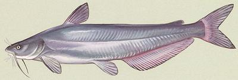
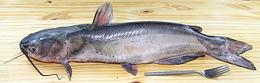

Catfish Order

[Order Siluriformes]
There are some 2200 species of catfish in as many as 40 families and many
genera. The greatest number of species is found Central and South America
(including one recently discovered in Mexico that may have been around
since dinosaur days). Some catfish are ocean fish but most live in fresh
water. Catfish do not have scales but some species are covered with
overlapping armor plates.
No scales means catfish are not kosher, so observant Jews need to use
Carp (and deal with the spines) or Tilapia instead. Carp is traditional
in Europe but some think Tilapia is the fish Jesus distributed along with
loaves.
The heaviest catfish are Mekong giant catfish (Pangasianodon
gigas) which can reach 9 feet and over 600 pounds. Unfortunately they
are currently listed as critically endangered and should not be fished or
eaten. The longest is the Eurasian Wels catfish (Silurus glanis)
which can reach nearly 10 feet and 330 pounds. This fish is common in
central, southern and eastern Europe, in the Baltic region and the
Caspian Sea. It is currently IUC Red Listed as LC (Least Concern).
Caution: Catfish generally have strong sharp spines at
the leading edges of their fins which can cause puncture wounds, and these
spines are associated with poison glands. Toxicity of North American cat
fish ranges from "not much" to requiring some medical attention, but at
least one South American species is deadly, and a few others there will
land you in the hospital.
Illustration of Blue Catfish by U.S. Fish and
Wildlife Service = public domain..
More on Fish Varieties (very
large page).
Only a few species are fished and farmed commercially, with the U.S.
South and Vietnam as the major producers of catfish sold in North America.
Asian markets in Los Angeles sell several varieties of catfish from under
1 pound to over 6 pounds, some of the smaller are available live from the
store's fish tanks.
We have separate articles on each of the types most available
commercially in North America:
Family Ictaluridae
|
Channel Catfish

[Channel Catfish Ictalurus punctatus of Family Ictaluridae]
Catfish farming is a sizeable industry in the U.S. where the Channel
Cat dominates. Most catfish are grown (and consumed) in the Southern
States but they are widely available in the rest of North America. The
photo specimen weighed 4 pounds 1-3/8 ounces (factory cleaned) and was
24 inches long.
Details & Cooking.
Bullhead
[Ameiurus melas (Black Bullhead) | Ameiurus nebulosus
(Brown Bullhead) | Ameiurus natalis (Yellow Bullhead)]
Bullheads are a variety of American freshwater catfish that inhabits
slow moving backwaters with soft bottoms. They differ from most
catfish in having squared off tails and being relatively small in size.
These fish can grow to over 24 inches and nearly 8 pounds, but are
commonly about 10 inches and 1 pound (A. natalis a little
smaller). A. melas has been introduced to Europe where it forms
dense stunted populations, making it rather unpopular. These fish
tolerate very adverse conditions, so it's unlikely they'll be able to
get rid of them now. The photo specimen, probably A. melas or
a hybrid, was 12-1/2 inches long and weighed 1 pound 4-1/2 ounces.
Details & Cooking.
Flathead Catfish
[Mississippi Catfish, Yellow Catfish, Opelousa Catfish, Mud Catfish,
Shovelhead Catfish, Pylodictis olivaris]
A very large Mississippi catfish noted mainly as a sport fish but
pretty good eating too.
Details & Cooking.
Illustration by U.S. Fish and Wildlife Service = public domain.
Blue Catfish
 [Ictalurus furcatus]
[Ictalurus furcatus]
The largest Mississippi catfish and the second best North American catfish
for eating, after the closely related Channel Catfish.
Details & Cooking.
Illustration by U.S. Fish and Wildlife Service = public domain.
|
Family Pangasiidae
(Shark Catfish)
|
Vietnamese Catfish
[Basa (US); Cá Ba sa (Viet); Pangasius pangasius
| Swai (US); Pla Sawai (Thai); Cá Tra (Viet),
Iridescent Shark, Striped Catfish, Striper (Trader Joe's);
Pangasius. hypophthalmus | Cá Ba sa
(Viet); Pangasius bocourti]
On the Internet, there are more outright lies about these fish than
just about any other food item - lies spread mainly by unethical
catfish farmers. Faced with competition, these farmers chose smear
campaigns and political manipulation rather than improve their methods
to compete. These catfish are very different from American catfish and
require extensive preparation to be marketable here, so for some time
only frozen fillets were being sent to North America. By late 2013,
whole fish started appearing in the Asian and Philippine markets here.
Fillets may range from 2 ounces to over 11 ounces, sold in bags of a
single size.
Two varieties are widely farmed, Basa (P. pangasius)
and Swai / Tra (P. hypophthalmus), but what is shipped
to North America is mostly Swai. Basa is preferred in Vietnam, but,
since American buyers don't care, the faster growing Swai is shipped.
Swai fillets are thinner and a little coarser than Basa.
Details and Cooking
|
Family Clariidae
(Air Breating Catfish)
|
Walking Catfish
 [Clarias batrachus - also hybrids with C. gareipinus,
North African sharptooth catfish]
[Clarias batrachus - also hybrids with C. gareipinus,
North African sharptooth catfish]
This air breathing catfish quickly becomes a pest in subtropical
regions, especially since it can travel fairly long distances over
land from one body of water to another. Brought to Florida for fish
farming, it escaped and is now notorious for invading fish farms and
eating all the fish. Native to Southeast Asia, it can grow to over 18
inches and over 2-1/2 pounds but the photo specimen was 17 inches and
1-1/2 pounds. Hybrids with the North African variety can be much
larger, and that variety itself can grow to 120 pounds.
Details and Cooking
African Sharptooth Catfish
[Clarias gariepinus of Family Clariidae]
This large air breathing catfish is native through most of Africa
and the Middle East. It can grow to 5 feet 7 inches and weigh over
130 pounds. Farming this fish in Africa has proven so successful it
has been taken to Brazil, Vietnam, Indonesia and India, so it will
probably soon show up in the Asian fish markets here in Los Angeles.
It is fast growing, spawns easily, can live on agricultural waste and
in high density fish ponds. This fish fetches a premium price in many
countries because it can be sold live, just kept in a basket of wet
straw. See Walking Catfish for Details
and Cooking. Photo by W.A. Djatmiko distributed
under license
Creative Commons Attribution-Share Alike 3.0 Unported.
|
Family Siluridae
-
(Sheatfishes)
There are many genera and species in this catfish family, but only a
few are fished and farmed commercially.These fish live mostly in the
rivers and lakes of Southeast Asia and Southern China, though by far
the largest, Silurus glanis, is found in the Baltic region of
Europe and the Black and Aral Sea regions.
|
Sheatfish
[Bleeker's Sheatfish; Pla Daeng (Viet); Pa Nang Ngeun (Laos);
Pla Nuea On (Thai); Trey Kes (Cambodia) Phalacronotus bleekeri
syn. Micronema bleekeri]
This fish can grow to nearly 24 inches, but the photo specimen
was 16 inches and weighed 14 ounces. They are also sold in a juvenile
state. They are caught wild and farmed, IUCN rated LC (Least Concern).
Details & Cooking.
Pabda
[Madhu Pabda (Bangladesh); Ompok pabda]
This fish is found in rivers of Afghanistan, Pakistan, India,
Bangladesh and Burma, and is particularly popular in the cuisines
of West Bengal and Bangladesh. It can grow to 11 inches, but is more
commonly around 6 inches. IUCN Red listed NT (Near Threatened).
Details & Cooking.
Photo by Balaram Mahaider distributed under license
Creative Commons
Attribution-NonCommercial-ShareAlike 4.0 International Attribution
Required..
|
Family Bagridae
- (Bagrid Catfishes)
|
Mystusfish
[Striped Dwarf Catfish; Cá Chot (Vietnam); Trey kanchos chhnoht
(Cambodia); Pa kha gneng khang lai (Laos); Mystus mysticetus
| Pa kha gneng khang lai (Laos); Trey kanchos chhnoht
(Cambodia); Mystus multiradiatus]
Native to the Mekong (Laos, Thailand, Cambodia, Vietnam) and
Chao Phraya (Thailand) river basins of Southeast Asia, these fish
can grow to a shade over 5 inches long. They often form schools of
both species, but M. mysticetus can be told apart because
you can see it's eyes from the underside, and M. multiradiatus
has a rounder anal fin. These are a well known fish in Vietnam,
where they are harvested when the rice paddies start to dry and they
head for the river.
Details & Cooking.
|
Family Sisoridae
|
Turkistan Catfish
[Glyptosternon reticulatum]
This catfish is native from the Indus River drainage in Pakistan east to
Western China. It is well known from the rivers of Central Asia, and
has been featured on a Kyrgyztani stamp. This fish can grow to 9.5
inches, but is commonly 6 inches long, and prefers fast moving rivers.
There are four other Glyptosternon Catfish in the region, but this is
the only one I've found any information on.
Illustration by Francis Day, copyright expired.
|
sf_catz 060815 rev 110318 - www.clovegarden.com
©Andrew Grygus - agryg@clovegarden.com - Photos on
this page not otherwise credited are ©
cg1 - Linking to and non-commercial use of this page permitted